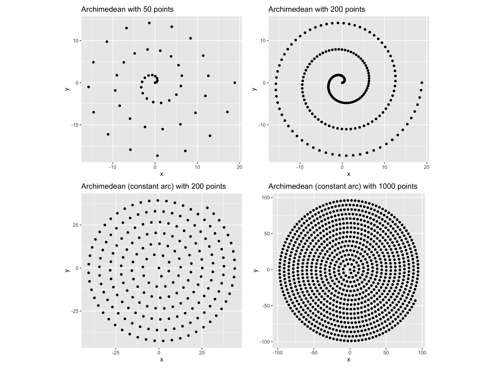

It all started a few months ago. We started collaborating with an organization doing indigenous journalism in Colombia. We wanted to find some balance between the numbers and the identity of the different indigenous communities we were working with.
Here is the result, in this post, we will tell you how we got there from a boring census spreadsheet to show numbers that did well in representing the communities.

Out of a thousand Colombians 44 belong to an indigenous community
Check out the full investigation where these visualizations are featured, available en Spanish, and the different languages of the three communities: Wayuu, Gunadule, and Tikuna.
We feel it is very important as a data team to support social organizations and journalists to show the realities of vulnerable groups. It usually happens that these groups make the headlines in rare occasions when very unlikely events happen, such as the coverage by The Economist and the New Yorker of the death of Antonio Bolívar, the last member of a community in the Amazon who became famous for his role in the oscar-nominated movie The Embrace of The Serpent.
In an effort to put a human face to the stories of indigenous women in Colombia who live at the border with countries like Venezuela, Brazil, Perú, and Panamá. We embarked with the help of the team at Agenda Propia in a path to connect raw numbers and data buried in the statistical census with the faces, photographs, narrative stories, and visual elements of those communities in the Amazon, the Guajira desert and the Darien region.
The visual elements we decided to use were those emerging from their ancestral fabrics and patterns.

380.460 are Wayuu in the Colombian side of them are women 197.140, their language: Wayuunaiki. There are 542.043 Wayuus at both sides of the Colombian-Venezuelan bolder
We decided to make a data visualization that portrayed indigenous patterns and their different proportions from different census numbers. We started looking at ways to arrange dots in patterns, aesthetically the circle provided a great arrangement, so we were left to find a way to pack circles that looked organic.
We thought of arranging the dots in a spiral, here where the code starts. We didn’t know there were so many possibilities for creating spirals. Here are a few:
- Archimedean spiral
- Circle involute
- Atzema spiral
- Logarithmic spiral
- Vogel spiral
The logarithmic spiral was out of question, as we wanted a spiral that looked dense and with somewhat constant density along a circle. Vogel spiral is not really a spiral, but more on that later. And the Atzema spiral for large n approximates the Archimedean spiral and starts with an asymptote that one can tweak.
The code of the spirals is posted here but can be found here: script.R
archimedean_spiral <- function(n, a = 0, b = 1, turns = 3){
# b separation of turns
t <- seq(0, turns * 2 *pi, length.out=n)
x <- (a + b*t) * cos(t)
y <- (a + b*t) * sin(t)
d <- tibble::tibble(x, y)
d$n <- 1:n
d
}
circle_involute <- function(n, a = 2){
# https://mathworld.wolfram.com/CircleInvolute.html
t <- seq(0,5*pi, length.out=n)
x <- a * (cos(t) + t * sin(t))
y <- a * (sin(t) - t * cos(t))
d <- tibble::tibble(x, y)
d$n <- 1:n
d
}
atzema_spiral <- function(n, turns = 3){
t <- seq(0, turns * 2 *pi, length.out=n)
x <- sin(t)/t - 2 * cos(t) - t * sin(t)
y <- cos(t)/t - 2 * sin(t) + t * cos(t)
d <- tibble::tibble(x, y)
d$n <- 1:n
d
}
vogel_spiral <- function(n){
t <- 1:n
r <- sqrt(t)
golden_angle <- pi * (3 - sqrt(5))
theta <- t * golden_angle
x <- r * cos(theta)
y <- r * sin(theta)
d <- tibble::tibble(x, y)
d$n <- 1:n
d
}
Here you see samples of the spirals above.

We need spirals that work fine with a different number of points, in the tens, or even in the thousands of points. We tried to use the convolute circle but with the Archimedean spiral, one can have a bit more control over the number of turns and their separation.
Let’s see how the Archimedean spiral looks for different numbers of points. Note that when we see the spirals not as paths but as points we get a different picture. For our specific use case we needed points that filled a circle in a uniform way, independent on the number of points we use, for this we went ahead and made more tweaks to our function such that we could approximate the arc in the Archimedean spiral so we could keep it constant.

We were not happy with the arrangements of points for different n. The end of the spiral always looks as if something is missing, it doesn’t give the impression that the dots fill a circle in a smooth way.
That’s when we turned to the Vogel spiral. The Vogel spiral takes into account the Golden Angle, which is like the golden ratio but along two arcs in a circle, and starts adding points every 137.5077... degrees or pi ( 3 - sqrt(5)) radians and scaling the radius by sqrt(n)

The pattern looks very organic, and works beautifully with any given n, just make sure you adjust the size of the points that work for you for different values of n.
Enjoy some more patterns from indigenous communities.
This is the Gunadule pattern, an indigenous community in the border of Panama and Colombia, there are 2610 members of this community

There are 13.842 Tikunas en Colombia, they live in the Amazon
If you are curious about the animations we simply set up the patterns as polygons and used {transformr}